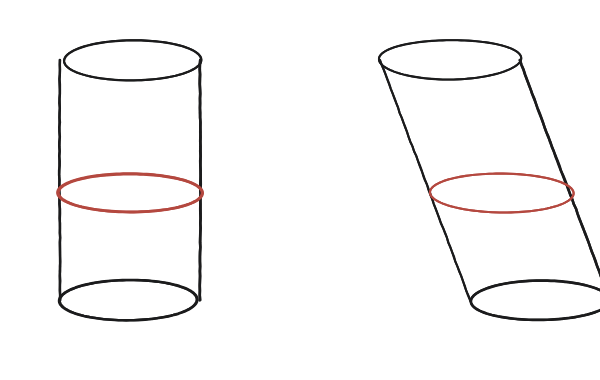
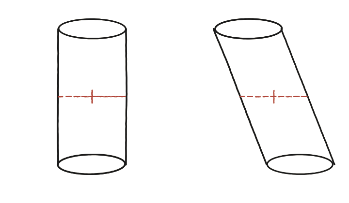

Pots trobar dos objectes amb seccions transversals iguals i àrees de superfície diferents?
No cal cap objecte estrany
Es compara un cilindre recte amb un cilindre "inclinat" —com una pila de monedes que s'ha desplaçat de costat sense girar cap moneda— amb la mateixa base i la mateixa alçada.
Compara les seccions, no la superfície encara
A cada alçada, el tall horitzontal dels dos cilindres és un cercle idèntic (mateix radi) —per Cavalieri, doncs, tenen el mateix volum. Però un és "recte" i l'altre "s'inclina": mirant ara la superfície lateral de cadascun, quina serà més gran, i per què?

La construcció
Es mira la superfície lateral de cadascun, no el volum, que ja se sap que coincideix: quina franja vertical s'allarga en inclinar-se?

Tancar-ho
El cilindre inclinat té una superfície lateral estrictament més gran que el recte, encara que el volum sigui idèntic —cada franja vertical de la superfície s'allarga en inclinar-se, de la mateixa manera que la hipotenusa d'un triangle rectangle és més llarga que el catet.
Aquí cal aturar-se abans de fer el pas següent, perquè és fals i és temptador: que cada franja s'allargui per un factor k no vol dir que la superfície es multipliqui per k. No totes les franges s'inclinen igual respecte de la vora de la base. Les que queden a la banda cap on el cilindre 'cau' s'inclinen de ple i creixen pel factor sencer; les de la banda perpendicular gairebé no ho noten i pràcticament no creixen. La superfície creix, però menys que k, i per a un cilindre el valor exacte ja no s'obté amb aritmètica elemental.
Per a la resposta que la pregunta demana això no fa cap falta —n'hi ha prou de saber que creix—, i si es vol un número exacte, n'hi ha prou de canviar el cilindre per un prisma, on totes les cares són planes.
Un cilindre recte i un cilindre inclinat (mateixa base, mateixa alçada) tenen el mateix volum —per Cavalieri— però superfícies laterals diferents: la de l'inclinat és sempre més gran. Compte, però: creix menys que el factor pel qual s'allarga cada franja, perquè no totes les franges s'inclinen igual.
Comprovació
Amb un prisma de base quadrada els números surten exactes. Base de costat 6, alçada 8: superfície lateral del prisma recte = 4×6×8 = 192, i volum = 36×8 = 288. Inclinant-lo 6 unitats en la direcció d'un dels costats de la base, el volum es manté a 288 (Cavalieri: cada tall horitzontal continua sent el mateix quadrat), però la superfície canvia de manera desigual: les dues cares paral·leles a la direcció d'inclinació passen de rectangles a paral·lelograms de la mateixa base i la mateixa alçada, 6×8 = 48 cadascuna, igual que abans; les dues cares perpendiculars s'inclinen de ple i passen a ser rectangles de 6 per √(8²+6²) = 10, o sigui 60 cadascuna. Total: 2(48)+2(60) = 216, contra 192. I 216/192 = 1,125, mentre que les arestes s'han allargat per 10/8 = 1,25: la superfície creix, però no pel factor de les arestes —perquè dues de les quatre cares no creixen gens.
Aquest exemple és el bessó en 3D del que passa amb el perímetre d'una figura esglaonada en 2D: igual que aquí el volum no "sent" la inclinació però la superfície sí, allà l'àrea no sent els esglaons però el perímetre sí.